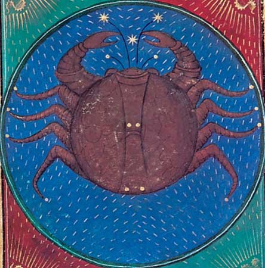

|

|
Cancer, (Latin: “Crab”) in astronomy, zodiacal
constellation lying in the northern sky between
Leo and Gemini, at about 8 hours 25 minutes
right ascension and 20° north declination. It
contains the well-known star cluster called
Praesepe, or the Beehive. Its brighest star,
Al Tarf (Arabic for “the end” [of one of the
crab’s legs]), also called Beta Cancri, is quite
dim, with a magnitude of 3.6. In astrology,
Cancer is the fourth sign of the zodiac, considered
as governing the period from about June 22 to about
July 22. Its representation as a crab (or lobster or
crayfish) is related to the crab in Greek mythology
that pinched Heracles while he was fighting the
Lernaean hydra. Crushed by Heracles, the crab
was rewarded by Heracles’ enemy, Hera, by being
placed in the heavens.
|